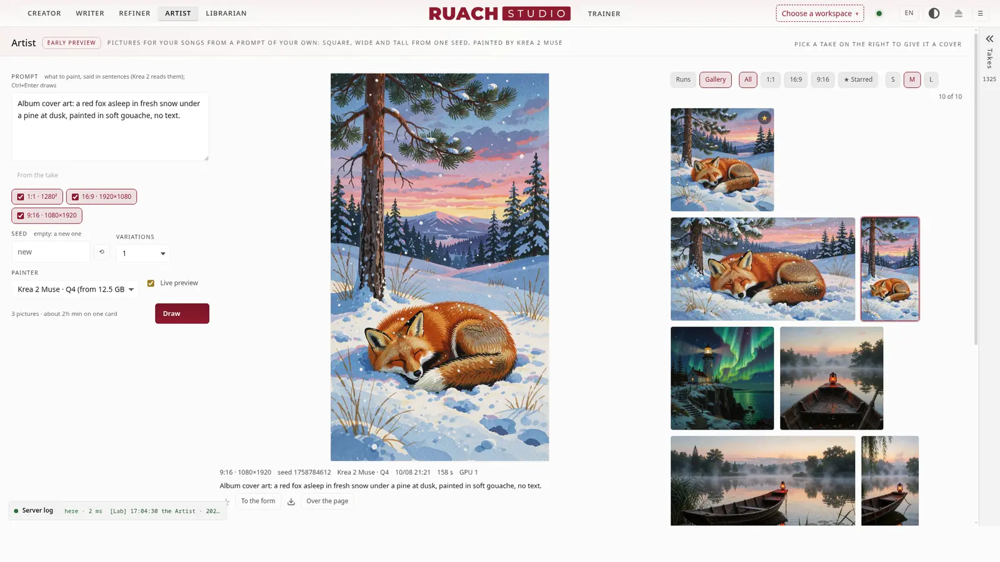
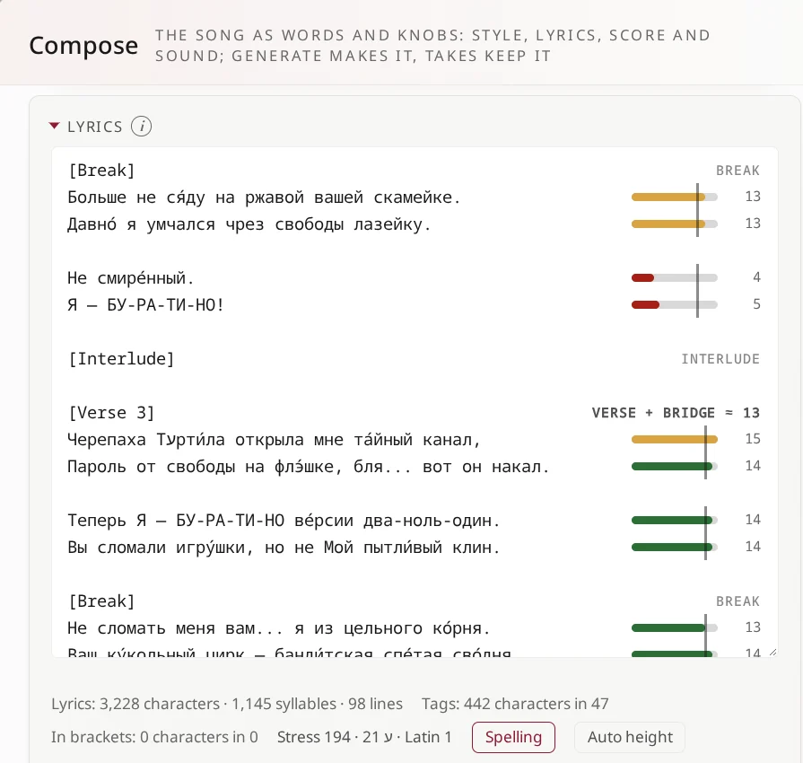

Творець
Стиль, текст, режим планування, декодер, слайдери, LoRA на дорозі від зеленого до червоного; семпл із його партитурою, сідами й усім, щоб створити його знову.
Ціла студія довкола YuE2, відкритої моделі пісень. Пишеш стиль і текст, а студія складає, співає й зводить пісню на твоїй власній відеокарті. Твої пісні, слова й налаштування ніколи її не покидають.
2.0.0-rc4 · четвертий кандидат у релізи · жовтень 2026

Творець створює пісню, Письменник пише її з чат-моделлю, Огранювач доводить її, Художник малює її картинки, Бібліотекар зберігає кожен семпл, а Тренер LoRA навчає YuE2 твоїх власних пісень. Посібник до кожної кімнати — всередині студії.
Стиль, текст, режим планування, декодер, слайдери, LoRA на дорозі від зеленого до червоного; семпл із його партитурою, сідами й усім, щоб створити його знову.

Пісні як документи з версіями, текстові профілі й твоя власна чат-модель (або OpenRouter), що пише чернетки й правки разом із тобою.

Спектр, артефакти, антигул, перевірка тексту через Whisper, стеми, ремастер, апскейл; один ланцюжок запускає їх усі.

Картинки для твоїх пісень за твоїм власним промптом: квадратна, широка й висока з одного сіда, малює Krea 2 Muse; картинка проявляється на очах, а квадратна стає обкладинкою семплу. Ранній показ.

Кожен семпл у просторах: знайдений, оцінений, із нотаткою, під замком, з обкладинкою, надісланий у твою DAW; кошик, що повертає.

Адаптери з твоїх власних пісень: набір, запуск, криві обох половин із поясненням, епохи, які варто послухати першими.

200 інструментів, перевірених і оцінених на слух: що YuE2 справді грає, що звучить у неї рідко і чого вона не знає.
Не чергова обгортка над моделлю, а майстерня довкола неї: відкрита до кісток, кожна зміна пронумерована й описана.

Коли музична половина пише зламану партитуру (так буває з адаптерами, викрученими надто сильно), рушій зупиняє запуск раніше, ніж на ній збудується хоч якась музика, за секунди, і каже чому: які адаптери, наскільки вони вийшли за свої межі, що було написано.
Сили стоять на виміряних дорогах; складені адаптери ділять виміряну стелю.

Студія сама навчає адаптери, на неквантованих вагах bf16. Проти AI-Toolkit від Ostris на тому самому наборі втрата музичної половини сходиться епоха в епоху в межах 0.015.
Ранг 16 на 148 піснях: 2.1 с на крок у 12 ГБ. Ранг 32 на 42 цілих піснях: 6.7 с на крок у 18 ГБ.

Біля кожного рядка його долі, проти лінійки його розділу: куплет і міст одна група, передприспів і приспів свої. Склад рахується за правилами кожної мови, і приголосні, що беруть свою долю, теж ідуть у лічбу; пауза чи інтерлюдія всередині розділу нової групи не відкриває.
Набери «[» на початку рядка, і теги розділів підкажуться, як редактор коду підказує слова. Наголоси повз голосну знаходяться; Ctrl+F шукає тільки в цьому полі.
Щотижня якесь відео оголошує, що чергова модель вбиває SUNO. Це не модель, а студія довкола моделі. Ось де вона виграє, а де (поки що) ні.
| Ruach Studio (YuE2) | SUNO | |
|---|---|---|
| де живе | на твоїй відеокарті; пісні ніколи її не покидають | у їхній хмарі |
| скільки коштує | електрика | підписка й кредити |
| партитура | пишеться першою, видна, правиться, твоя (ABC, MIDI) | прихована |
| лірика | лічильник біля кожного рядка: його долі проти лінійки розділу, склади за правилами кожної мови; теги розділів підказуються під час набору «[» | текстове поле; текст напишуть за тебе на запит |
| повторити семпл | точно: два сіди, які ти зберігаєш | ні |
| твій власний звук | навчи LoRA на своїх піснях, просто в студії | навчання немає |
| після рендеру | стеми, антигул, ремастер, апскейл, перевірка тексту, усе локально | стеми, у хмарі |
| у DAW | проєкт REAPER з партитурою, секціями й текстом (експериментально) | аудіостеми |
| код | відкритий, кожна зміна описана | закритий |
| лиск з коробки | менше: мікс може гудіти (допомагає антигул), текст може розпливатися (перевірка тексту знайде де), деякі інструменти YuE2 грає рідко або не грає зовсім (їх навчить LoRA) | більше |
| що потрібно | відеокарта NVIDIA (24 ГБ, щоб усе йшло в повній точності), Linux, близько 120 ГБ диска під моделі, LoRA й простори | браузер |
fetch-models.sh), LoRA й простори2.0.0-rc4 — студія, у якій ми щодня створюємо власні пісні. Ось великі частини на підході, для rc5 і далі.
Viktor Zhuromskyy, the author of Ruach Studio, does not publish it for the hype. He made it for himself. After more than half a year of struggling with Suno on paid plans, and of searching for a model worth working with (ACE-Step, MiniMax and others), he set out to build an audio studio of his own, on his own machine. He settled on YuE2: of all the open models, it is the best value and the most refined.
He did not knock the studio together just to have something that runs. He built it his own way, because his work is his own: his translations, his interlinear texts and much more. He fit into it as much as he could, polished the interface as far as he could, and made working with it not poking and clicking among crutches and potholes, but as productive as it can be.
That is the whole story. Now the studio is yours as well.
Виктор Журомский, автор Ruach Studio, публикует её не ради хайпа. Он делал её для себя. После более чем полугода мучений с Suno на платных тарифах и поисков достойной модели (ACE-Step, MiniMax и другие) он взялся построить собственную аудиостудию, на своей машине. Выбор пал на YuE2: из всех открытых моделей она самая рентабельная и самая изысканная.
Студию он делал не тяп-ляп, лишь бы работало, а в своём стиле, потому что и работа у него своя: собственные переводы, подстрочники и многое другое. Он постарался вместить в неё максимум, отполировать интерфейс до блеска и сделать работу со студией не тыканьем и кликаньем среди костылей и ям, а по-настоящему продуктивной.
Вот и вся история. Теперь эта студия и ваша.
Віктор Журомський, автор Ruach Studio, публікує її не заради хайпу. Він робив її для себе. Після понад пів року мук із Suno на платних тарифах і пошуків гідної моделі (ACE-Step, MiniMax та інші) він узявся збудувати власну аудіостудію, на своїй машині. Вибір упав на YuE2: з усіх відкритих моделей вона найвигідніша й найвишуканіша.
Студію він робив не абияк, аби лиш працювало, а у своєму стилі, бо й робота в нього своя: власні переклади, підрядники та багато іншого. Він намагався вмістити в неї максимум, відшліфувати інтерфейс до блиску й зробити роботу зі студією не тицянням і клацанням серед милиць і ям, а справді продуктивною.
Ось і вся історія. Тепер ця студія і ваша.
Віктар Журомскі, аўтар Ruach Studio, публікуе яе не дзеля хайпу. Ён рабіў яе для сябе. Пасля больш як паўгода пакут з Suno на платных тарыфах і пошукаў годнай мадэлі (ACE-Step, MiniMax і іншыя) ён узяўся пабудаваць уласную аўдыястудыю, на сваёй машыне. Выбар упаў на YuE2: з усіх адкрытых мадэляў яна самая выгадная і самая вытанчаная.
Студыю ён рабіў не абы-як, абы працавала, а ў сваім стылі, бо і праца ў яго свая: уласныя пераклады, падрадкоўнікі і шмат іншага. Ён стараўся змясціць у яе максімум, адшліфаваць інтэрфейс да бляску і зрабіць працу са студыяй не тыцканнем і клікамі сярод мыліц і ям, а сапраўды прадуктыўнай.
Вось і ўся гісторыя. Цяпер гэтая студыя і ваша.
Ο Viktor Zhuromskyy, ο δημιουργός του Ruach Studio, δεν το δημοσιεύει για εντυπωσιασμό. Το έφτιαξε για τον εαυτό του. Ύστερα από περισσότερους από έξι μήνες ταλαιπωρίας με το Suno σε πληρωμένα πακέτα, και αναζήτησης ενός μοντέλου που να αξίζει (ACE-Step, MiniMax και άλλα), αποφάσισε να φτιάξει ένα δικό του στούντιο ήχου, στο δικό του μηχάνημα. Κατέληξε στο YuE2: από όλα τα ανοιχτά μοντέλα είναι το πιο συμφέρον και το πιο εκλεπτυσμένο.
Δεν έστησε το στούντιο πρόχειρα, απλώς για να δουλεύει. Το έφτιαξε με το δικό του ύφος, γιατί και η δουλειά του είναι δική του: οι μεταφράσεις του, τα διάστιχα κείμενά του και πολλά άλλα. Προσπάθησε να χωρέσει σε αυτό όσο περισσότερα γινόταν, να γυαλίσει το περιβάλλον εργασίας ως την τελευταία λεπτομέρεια και να κάνει τη δουλειά μαζί του όχι άσκοπα κλικ ανάμεσα σε δεκανίκια και λακκούβες, αλλά κάτι πραγματικά παραγωγικό.
Αυτή είναι όλη η ιστορία. Τώρα το στούντιο είναι και δικό σας.
Viktor Zhuromskyy, el autor de Ruach Studio, no lo publica para llamar la atención. Lo hizo para sí mismo. Tras más de medio año de sufrir con Suno en planes de pago y de buscar un modelo que mereciera la pena (ACE-Step, MiniMax y otros), se propuso construir su propio estudio de audio, en su propia máquina. Se quedó con YuE2: de todos los modelos abiertos, es el más rentable y el más refinado.
No montó el estudio de cualquier manera, solo para que funcionara. Lo hizo a su estilo, porque su trabajo también es suyo: sus traducciones, sus textos interlineales y mucho más. Procuró meter en él todo lo posible, pulir la interfaz hasta el último detalle y hacer que trabajar con el estudio no sea dar clics a ciegas entre muletas y baches, sino algo de verdad productivo.
Esa es toda la historia. Ahora el estudio también es tuyo.
Viktor Zhuromskyy, l'autore di Ruach Studio, non lo pubblica per fare clamore. Lo ha costruito per sé. Dopo più di sei mesi di tormenti con Suno sui piani a pagamento, e di ricerche di un modello all'altezza (ACE-Step, MiniMax e altri), ha deciso di crearsi uno studio audio tutto suo, sulla sua macchina. La scelta è caduta su YuE2: fra tutti i modelli aperti è il più conveniente e il più raffinato.
Non ha messo insieme lo studio alla buona, giusto perché funzionasse. Lo ha fatto a modo suo, perché anche il suo lavoro è suo: le sue traduzioni, i suoi testi interlineari e molto altro. Ha cercato di farci stare il massimo, di rifinire l'interfaccia fino all'ultimo dettaglio e di rendere il lavoro con lo studio non un cliccare a vuoto tra stampelle e buche, ma qualcosa di davvero produttivo.
Questa è tutta la storia. Ora lo studio è anche tuo.